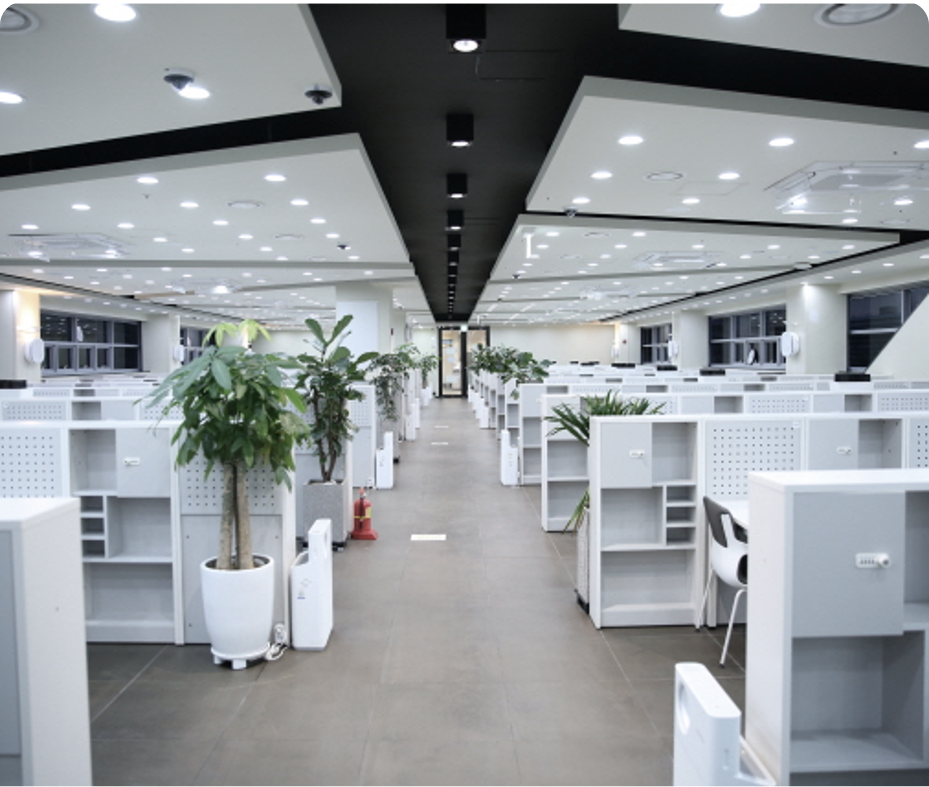
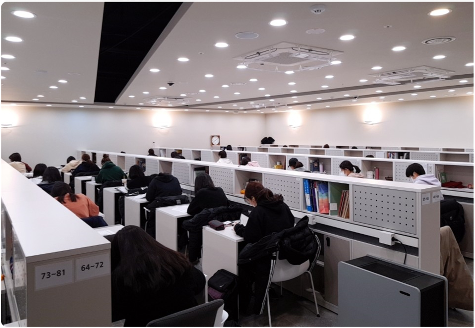
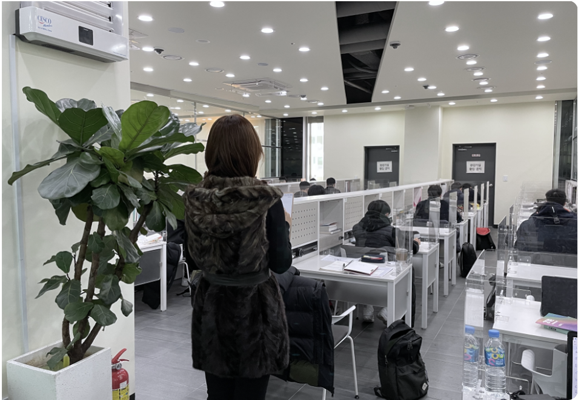
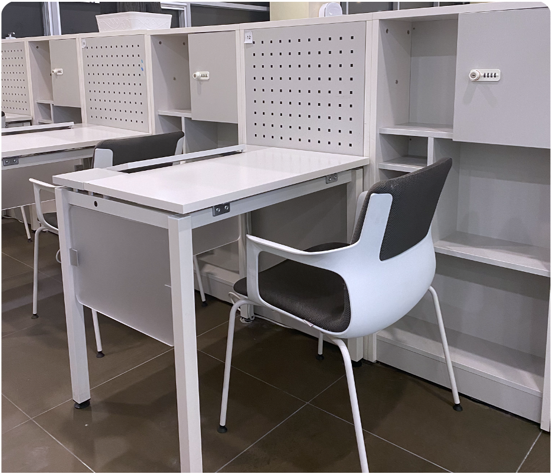
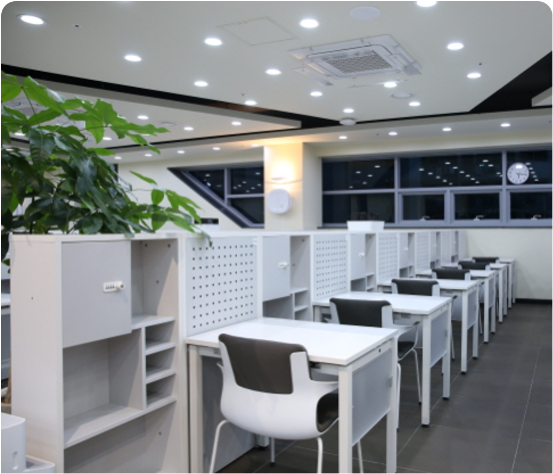
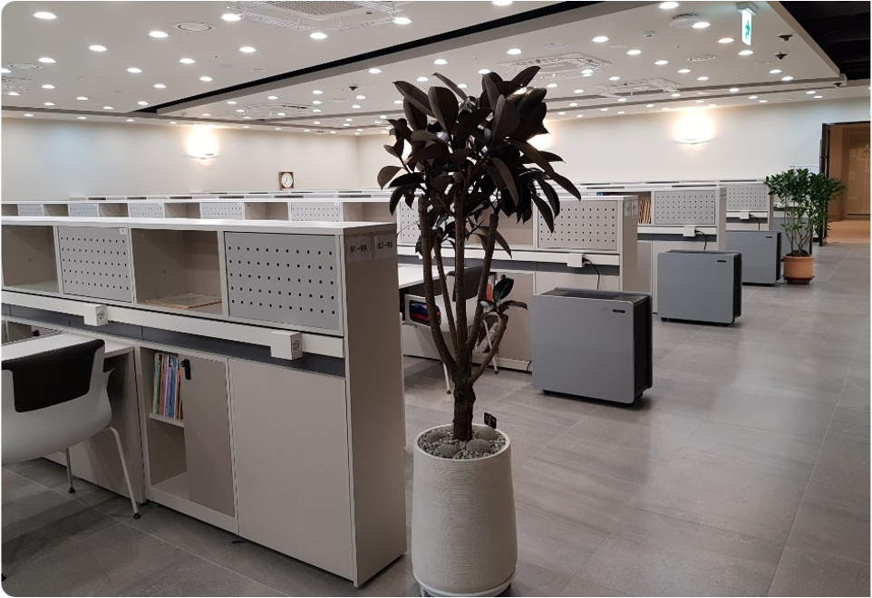
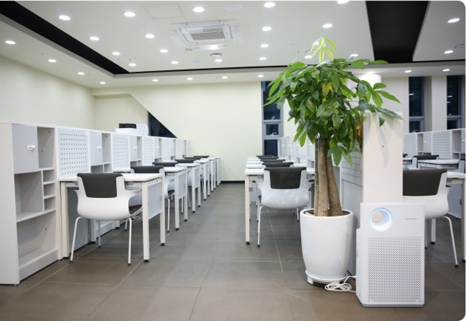
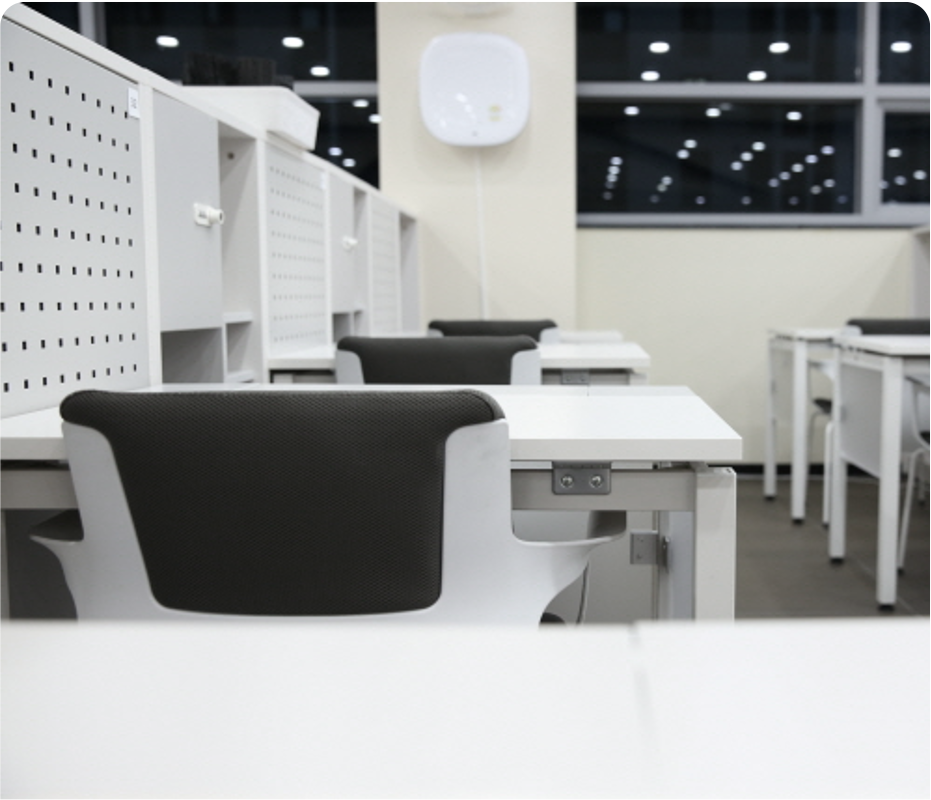
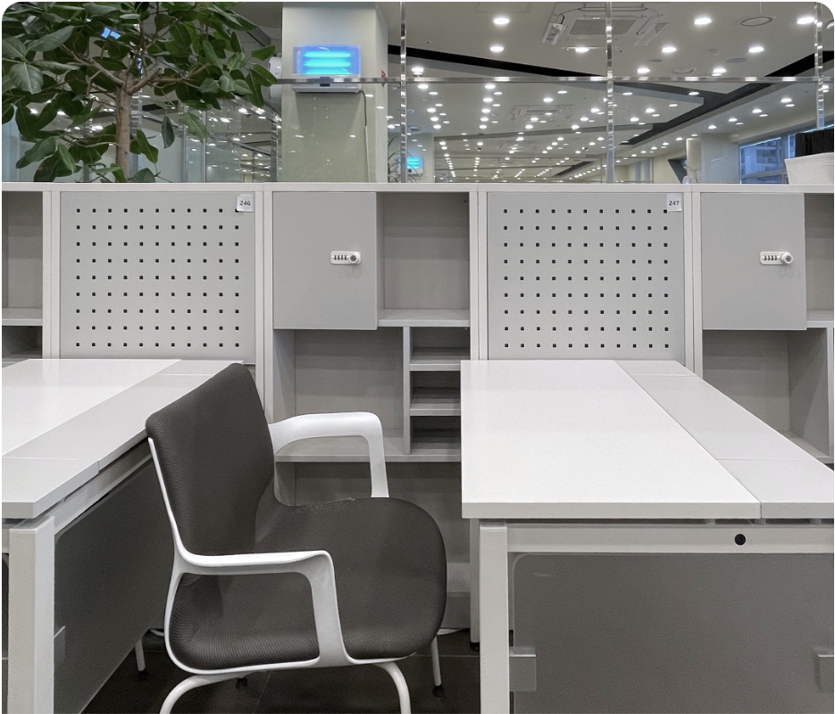

수업공간과 자습공간이 겹치면 학생들끼리 떠들 수 있는 환경이
만들어진다고 생각해요. 그런데 시대인재 부엉이 라이브러리에서는
개개인의 독립성이 보장되기 때문에 이러한 문제들을 걱정할
필요가 없었으며 주변인들에게 신경을 안 쓰게 되었습니다.
- N관 인문 길○우

시대인재 라이브러리는 천장이 높고 책상 간 간격이 넓어서 주변 사람들의
방해를 받지 않을 수 있다고 들었고, 재원생들끼리의 대화가 없기 때문에
조용한 환경에서 공부할 수 있겠다라는 생각도 들었습니다.
- M관 D반 김○빈
최상위를 위해 만든 생태계.

부엉이 라이브러리의 가장 큰 장점은 분위기였습니다.
모두 앉아서 공부하는 부엉이 라이브러리의 분위기는 실로
엄숙했으며, 놀랍게도 이 분위기가 2월 개강할 때부터
수능때까지 계속 지속되었습니다. 몇번쯤 흐트러질 법도 한데,
부엉이 라이브러리는 그런 틈조차 내주지 않았으며, 덕분에
누구에게도 방해받지 않고 10개월 가량 오직 제 공부에만 집중할
수 있었습니다.
- 신관 S반 문○환
부엉이 라이브러리는 쾌적했고, 주변 사람과 적당한 거리를
유지하고 있어 자습하는데 불편함은 없지만 서로가 공부하는
분위기를 형성하는 곳이었습니다. 모두가 공부를 합니다.
공부하다가 힘이 들 때 고개를 들어 주변을 둘러보면 다들 공부를
하고 있습니다. 부엉이 라이브러리의 분위기는 어느 곳보다 좋은
것 같습니다.
- 목동관 S반 홍○우

부족함이 없는 나만의 공간.

시대인재에서는 많은 양의 자료를 주는데 그 자료를 수납할 수 있는 책장이
개인별로 있고 또 책상과 붙어 있기 때문에 앉은 자리에서 모든 자료를
바로바로 꺼낼 수 있다는 것이 좋았습니다. 그렇게 때문에 자료를 꺼낼 때
마다 일어나는 번거로움과 소음이 없어 공부하기에 더 편리했습니다.
- 신관 I반 주○정

시대인재 라이브러리는 천장이 높고 책상 간 간격이 넓어서 주변 사람들의
방해를 받지 않을 수 있다고 들었고, 재원생들끼리의 대화가 없기 때문에
조용한 환경에서 공부할 수 있겠다라는 생각도 들었습니다.
- M관 D반 김○빈
더 높은 차원의 몰입을 위한 환경.

부엉이 라이브러리를 처음 들어갔을 때 받는 느낌은 가장 먼저 쾌적하다,
깔끔하다입니다. 시대인재 부엉이 라이브러리에는 식물이 정말 많습니다.
복도를 지나다닐때마다 식물을 볼 수 있어 삭막한 재수학원 속 자그마한
힐링이 되었던 것이 정말 좋았습니다. 또한, 공기청정기가 정말 많았고, 실내
온도나 습도, 냄새 등에 있어서 정말 쾌적하다고 느꼈습니다.
- 신관 I반 김○연
저는 답답한 걸 정말 싫어하는데, 시대인재 라이브러리에서는 한번도
답답하다고 느껴본 적이 없는 것 같습니다. 공기청정기에 식물, 게다가 많은
창문까지 있어서 정말 상쾌했습니다. 코로나19로 인해 마스크를 쓰고
있었음에도 정말 상쾌하게 다닐 수 있었습니다. 그리고 온도나 습도
관련해서도, 항상 적절하게 유지해주셔서 쾌적하게 공부를 할 수 있었습니다.
- 신관 S반 심○연

공부는 편안하게, 필요한 것은 바로바로.

책상의 크기도 커서 좋았고요. 각 자리마다 개인 콘센트를 사용할 수 있어서
태블릿으로 인강을 들을 때도 끊길 염려가 없었습니다. 제가 가장 만족했던
건 의자였는데 의자가 정말 너무 편해서 집에 가져다놓고 쓰고 싶었습니다.
공부할 때 의자나 책상 때문에 불편했던 적은 2월부터 11월까지 단 한 번도
없었습니다.
- N관 I반 황○원

책상이 넓어서 모의고사 시험지를 펴도 자리가 남고, 각 자리마다 콘센트가
있어 인강을 들을 때 유용합니다. 사물함도 자리 바로 옆이기 때문에
일어서지 않아도 쉽게 책을 꺼내 쓸 수 있습니다.